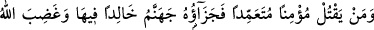
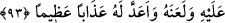

“Nefsini bırak ve gel” buyurduğu gibi nefis ve nefsin sıfatlarından ayrılmak, dünyâdan
ve âhiretten olan meşreblerin tamâmından uzak durmaktır. Bu ise ancak Allah Teâlâ’nın
kendine cezbi (cezbesi) ve kâbiliyet vermesi ile olur. Nitekim şöyle denilmiştir:
Hakk’ın adaleti için kabiliyet şart değildir
Belki kabiliyetin şartı, Hakk’ın adaleti, Hak vergisidir
Hikâye edildi ki Hârun Reşid’in çocukları zühd sâhibi idiler, dünyâya ve saltanata
meyletmezlerdi. Hârun Reşid’in bir oğlu daha olunca: “Bu çocuğu sırçadan bir köşke
yerleştir. Orada nîmetlerle ve şarkılarla yetişsin ki, saltanata lâyık olsun.” denildi.
Hârun Reşid de denileni yaptı. Çocuk büyüdüğünde bir gün et yerken kemiği elinden
düştü ve cam kırıldı. Böylece o da, yeryüzü ve gökyüzünü görüp onların ne olduğunu
sordu. Onlar da ne olduklarını söylediler. Bunun üzerine kendisini bu köşkten
çıkarmalarını istedi. Oradan çıktığında bir ölü gördü ve yanına vardı. Onunla
konuşmaya başladı, ama ölü konuşmadı. Yanındakilere bunun sebebini sordu. Onlar da
orada yatanın ölü olduğunu ve konuşamayacağını söylediler. O da: “Ben de böyle
olacak mıyım?” dedi.“Her nefis ölümü tadacaktır.” (Âl-i İmrân, 3/185) karşılığını
verdiler. Bunun üzerine onlardan ayrılıp çöle gitti. Onlar da peşinden gittiler. Bir de ne
görsünler, beş süvâri oğlanın yanına geldi. Yanlarında binicisi olmayan boş bir at vardı.
Oğlanı o ata bindirip götürdüler ve gözden kayboldular.
Her kalb Rabb’i mârifete uygun olmadığı gibi her beden de O’nun hizmetine elverişli
değildir. Bu sebeple Allah Teâlâ şöyle buyurdu: “Allah, her şeyi bilendir.” Yâni, cezbe
ve hizmete uygun olanı ancak Allah bilir. Sâib şöyle der:
Olgunlaşmamış kimselerde Mansur’un neş’esi yoktur
Her çömlekte fağfûr kâsesinin sesi yoktur
Bu iş, boş iddiâlarla olmaz. Mihenk taşı, gerçek olanla sahteyi birbirinden ayırır.
Hakîkat âlemi boş sözleri kaldırmaz. Görmez misin ki en büyük sultan yüksek sesle
konuşmaz. Çünkü o mahviyet âlemindedir. Süleyman (a.s.) peygamberlik mertebesinde
olmasına rağmen Belkıs’ın tahtını getirmesini Âsaf b. Berhiyâ’ya emretmiştir. Yâni o,
istiğrak aleminde olduğu için aşağı seviyeye inmek istemedi. Hz. Peygamber (s.a.v)’in:
“Benim Allah’la birlikte olduğum bir vaktim var. Bu vakitte hiç bir mukarreb melek
ve mürsel nebi bana ulaşamaz.”[106] sözü, bu mertebeye işaret etmektedir.
Allah’ım bizi de Cenâb-ı Kudsüne ulaşan, yakınlık ve ünsiyet meclislerinde
nîmetlenen kimselerden eyle.